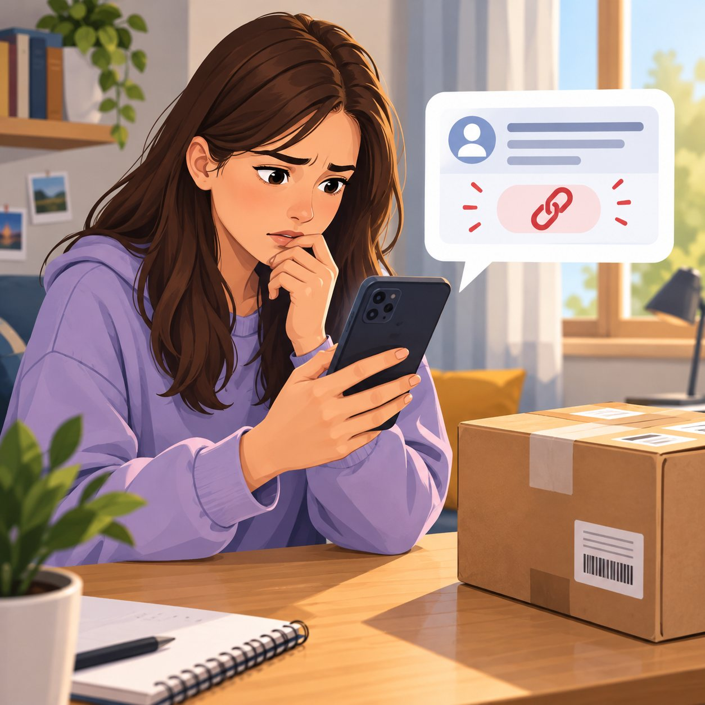

Scena 1
Fałszywy SMS od kuriera
Nieznany numer · teraz
Twoja paczka czeka na doręczenie. Wymagana jest dopłata 1,99 €. Zapłać teraz przez poniższy link, aby paczka nie wróciła do nadawcy.
Anna czeka na przesyłkę, więc wiadomość wydaje się wiarygodna. Myśli, że 1,99 € to niewielka kwota, i zastanawia się, czy od razu nie zapłacić.
Tuż przed kliknięciem w link zauważa, że wiadomość przyszła z nieznanego numeru i wywiera presję, żeby działać szybko.
Zamiast klikać, Anna sama otwiera oficjalną stronę kuriera i sprawdza status przesyłki. Okazuje się, że paczka jest już w drodze i nie trzeba niczego dopłacać.
Anna rozumie, że SMS był najpewniej oszustwem.